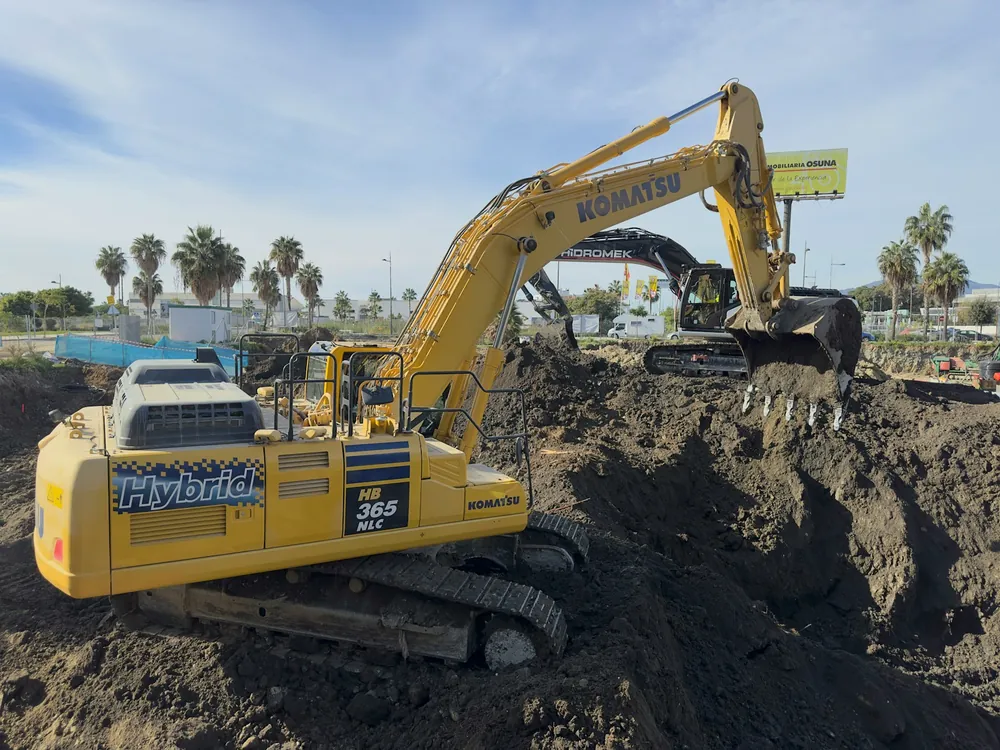
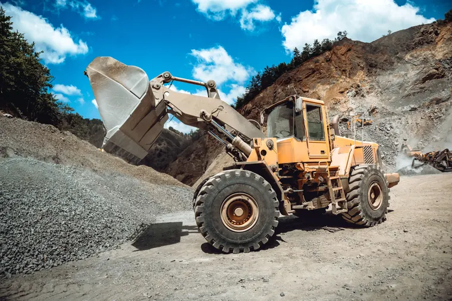

Modernización del Terminal Portuario de Salaverry
Para superar las limitaciones de infraestructura del puerto que restringían el acceso de buques de gran tamaño, rehabilitamos pilotes y construimos nuevas plataformas mediante el suministro de 93,500 m³ de concreto premezclado y soluciones prefabricadas. Esta ejecución técnica permitió superar los desafíos del entorno marítimo con una estructura de alta durabilidad, elevando la capacidad operativa y seguridad del terminal para permitir el ingreso de embarcaciones de mayor calado y dinamizar el comercio internacional del país.


1 de 3